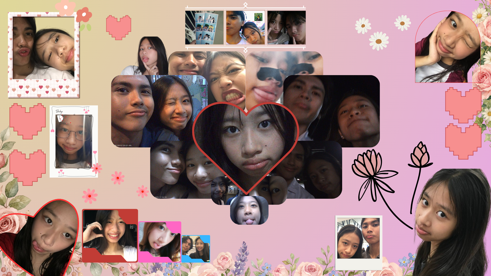

I made this for you minamahal kong YARLETTE!
Read this My Baby Girl!
Haiii babyyy! Happy Anniversary po!!!!🤍
Thank you po for everything. Thank you for choosing me every day. Kahit minsan hindi na natin
maintindihan ang sarili natin, still, pinipili mo pa rin ako. Pinipili mong intindihin ako, pinipili
mong maging okay para sa atin. Pinipili mo pa rin ako hanggang sa huli, and I'm so grateful dahil ako
ang pinili mong mahalin, pagkatiwalaan, at samahan hanggang sa pagtanda.
Alam kong alam mo na ilang beses ko nang nasabi na walang salitang makapaglalarawan kung gaano kita
kamahal. Kulang na kulang ang salitang "Mahal kita" para malaman mo kung gaano kalalim ang nararamdaman
ko para sa'yo. Kaya sa pamamagitan ng simpleng halik at yakap, sana kahit papaano ay maramdaman mong
mahal na mahal kita. Gagawin ko ang lahat ng makakaya ko para sa'yo. Ibibigay ko ang natitirang oras ko
para sa'yo, para malaman mong hindi ka nag-iisa dahil nandito ako palagi para sa'yo.
Sana alam mo pa rin na ikaw at ikaw lang ang pipiliin ko. Mas pipiliin ko pang magmukmok sa loob ng
tahanan na kasama ka kaysa magsaya kasama ang iba. Kaya sana, baby, huwag kang magduda sa pagmamahal ko
para sa'yo dahil gagawin ko ang lahat ng makakaya ko para lang sa'yo. At sa'yo ko lang ibibigay ang
pagmamahal na tulad nito. Sana alam mo rin kung gaano ako kasaya tuwing nakikita kita at nakakasama
buong araw. Mahawakan ko lang ang maliliit mong kamay, ay liligaya na ako.
Alam mo rin bang sobrang saya ko sa tuwing naa-appreciate mo ang maliliit na bagay na ibinibigay ko
sa'yo? Dahil doon, mas lalo kitang minamahal. Tandaan mo rin na mamahalin pa rin kita kahit nagtatampo
ka, kahit malayo ka, at kahit hindi sang-ayon ang mundo sa atin. Ang mahalaga, tayo parin sa isa't isa.
Dahil sa tuwing kasama kita, parang langit ang nadarama. Na hindi kayang ibigay ng mundong wala ka.
Hindi ko hahayaang maging malungkot ka at talikuran ang mundo. Ang sabi ko nga, nandito ako para sa'yo.
Nandito ako para samahan kang harapin ang mundo, sasamahan kita sa tuwing nalulungkot ka at sa tuwing
masaya ka.
Basta, mahal, tandaan mo na ako'y mananatili lang sa tabi mo. Kahit tumanda man tayo, papatawanin pa rin
kita kahit gilagid na lang ang matira. Kakantahan pa rin kita kahit boses ko'y paos na. Papanatilihin
kong ako ang maging iyong pahinga mo sa mundong puno ng problema. At sa oras na kunin na tayo ng
sinasabi nilang mundong walang kapintasan, ikaw pa rin ang aking pipiliin at ipapakita ko sa may kapal
kung gaano kita kamahal. Litrato man natin ay kumupas, ngunit ang mga alaalang binuo natin ay hindi
kailanman lilipas.
Nagpapasalamat ulit ako sa'yo, mahal, sa lahat ng ginawa mo para sa akin, sa pagod at oras na inilaan mo
para sa atin. Gusto kong masuklian ang lahat ng iyon sa pamamagitan ng sulating ito na para lamang
sa'yo. Maraming salamat ulit sa walang sawa mong pagmamahal sa akin. Mamahalin din kita hanggang sa huli
kong hininga.
Happy Anniversary ulit, baby!! I love you so much po! 🤍
Check this out my baby kong good girl!
------------------------------------------------------------

------------------------------------------------------------
Every time nakikita ko mga pictures natin, alam mo ba na parang gustong balikan mga larawan natin. Sa sobrang bilis ng oras minsan di na natin namamalayang tumatanda na po pala tayo. Pero dahil hindi naman possible yun kaya susulitin natin bawat oras na mag kasama tayo, kukuha tayo ng mga larawan para meron tayong binabalikan pag matanda na tayo. Kahit lumipas man yung maraming taon, di nawawala ganda mo saakin baby kooooooooooo. promise no joke!
Sana na gustuhan mo to kahit simple lang.
I LOVE YOU SO MUCH, BABY!. HAPPY ANNIVERSARY BABYYY KO!